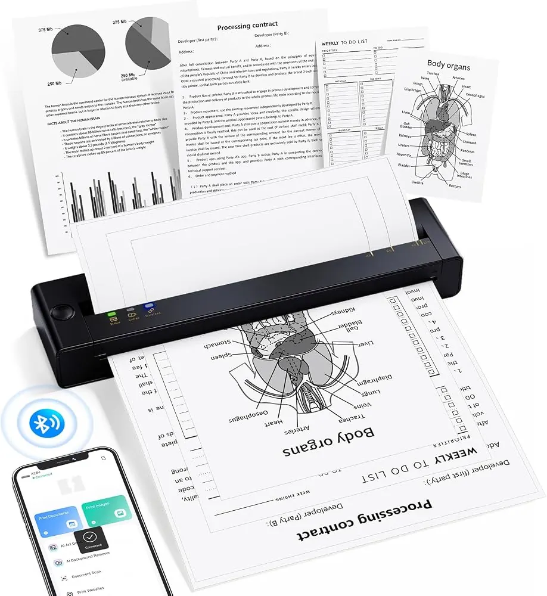

Printers
7 Features to Look for in a Home Printer
Compare seven important home-printer features, from printing technology and connectivity to duplexing, scanning and running costs.
Introduction: Choose for the Printing You Actually Do
A home printer can be used to print school work, forms, documents, travel documents, labelling and photos. Depending on what you need to print regularly you may require a printer with basic functions and compact size. If you have a couple of students or remote workers in your household then you may want something that prints quickly, has scanning capabilities and low running costs.
Have an idea of how many pages you're likely to print per month and if you require colour printing. Think about the following 7 points to ensure you get the best printer for your needs. To avoid getting a printer that is cheap to buy but costly to use, think about the following factors:

Printing Technologies
Inkjet Printers
These use liquid ink. Often these are great for printing documents with various colours and photos. Inkjet printers come in a variety of styles including ink cartridge printers and refillable tank printers. Ink cartridge printers will often be cheaper to buy however, if you’re printing lots of colour, the refillable tank option may be a good choice. Inkjet printers require some proper maintenance if they are going to be left for a long period of time.

Laser Printers
These use toner powder. These are often great for printing text based documents. Monochrome laser printers are a great choice for printing school work, invoices and forms. However, colour laser printers may be more costly to buy. Think about what you’ll be printing and how many pages you expect to print per month.
Total Cost of Ownership
Although you may be tempted by the initial price of the printer, make sure that you know how much the ink/toner will cost to replace. How many pages do they claim to print? The page yield will be tested by the manufacturers using standard conditions, however this may not be the same as your documents (especially if you’re including photos, large images or lots of colour).
Think about the cost of the paper, maintenance, printhead cleaning, spare parts and whether there is a warranty. Work out how much you’re likely to pay over 2-3 years. If you’re only printing a few pages per month then a simple, low cost printer may be enough. However if you’re printing regularly then an economical printer may be a better choice.
Wireless & Mobile Print
Print over Wi-Fi so multiple devices can be connected to the printer within your household. Some printers can be printed to from mobile devices using apps from the manufacturer. Ethernet can be handy if the printer will be close to your router.
Make sure the printer is compatible with your computers, phones and operating systems. Think about how easy it is to set up and if you need an account with the cloud. Although wireless printing is handy you should ensure that your network is secure. Try to use a secure network at home and change the default admin login if possible.
Automatic Duplex Printing
This means the printer will automatically print onto both sides of the paper. This can save you using as much paper for reports, notes and longer documents. If you regularly print study or work documents this can be very useful.
Check if the printer can duplex the paper sizes you require. Some printers only allow manual duplex printing whilst others allow automatic duplex. Not all documents will need duplex printing so make sure the printer can easily be changed in the driver.
Scan & Copy
Some printers have a copy and scan function. This can be handy when you need to scan signed forms, copy school documents or keep digital copies. A flatbed scanner is a good option if you’re only printing single pages, books and fragile documents. Some printers have an automatic document feeder which can be more convenient.
If you regularly scan double sided documents then make sure the printer can duplex with the automatic document feeder. Are there any file types you can scan to? If you’re not going to be using the advanced scanning functions then make sure you’re not paying for them. However if you regularly handle documents then think carefully.
Paper Sizes, Speed & Volume
Make sure the printer can handle the paper sizes, weights and types. Basic home printers will often only be able to print standard A4 paper. Some printers can handle envelopes, labelling and photo paper. If you’re printing large volumes of documents then make sure the paper tray can hold plenty of paper. A small paper tray will need to be filled more regularly.
The printer speeds will have been tested under certain conditions. This may not reflect how long it takes to print your first page, colour images or complicated documents. Make sure you look at how fast it can print and the recommended monthly volume. If you’re only going to be printing occasionally then the printer may struggle if a couple of people are sending large print jobs throughout the day.
Easy to Maintain, Support & Warranty
The printer should be easy to set up, fill and maintain. Make sure the ink/toner cartridges/bottles can be easily replaced. Is the control panel easy to understand? Are there official drivers for your devices? What is the manufacturers warranty?
Think about how the printer reacts when running low on supplies. Does it give helpful error messages? Can you find genuine or compatible supplies from reliable retailers in your area? A printer that is difficult to maintain can be frustrating even if the print quality is good.
Additional Factors
How much space will the printer take up? Consider the tray sizes and how much space it takes up when the trays are open. If the printer can fit on a shelf when closed it may take up a lot of space when you put paper in or collect the printouts. If you’re in a small apartment or shared working space then noise could be an issue. Look at independent reviews.
If the printer connects to your network then make sure it’s connected securely via Wi-Fi. Ensure the firmware is up to date. Make sure you can easily collect your personal documents. If the printer has internal storage or can scan to the cloud then make sure you understand how it deals with your data.
Conclusion
A good home printer will have the correct printing technology, low running costs, easy to connect, good paper handling and reliable support. Whilst automatic duplex and scanning can be a useful addition, they aren’t essential for everyone. Work out how much you’re likely to print, think about the cost of the supplies and make sure it’s compatible. The right printer will allow you to complete your regular tasks easily without costing you too much.
Need a hand with your printer or laptop?
Printerworld sells printers, laptops and genuine supplies, and repairs and services both. Bring in your model number and we will help you get it right.